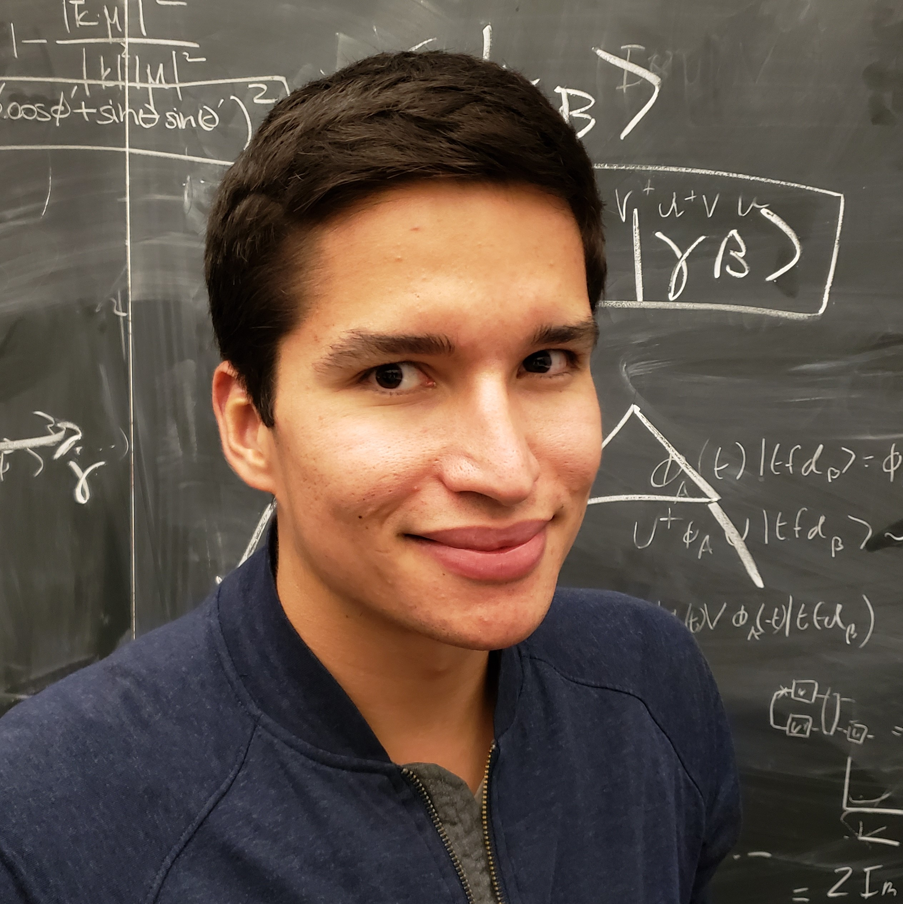

I'm a PhD student in the Department of Physics at Harvard University, fortunate to be advised by Mikhail Lukin.
I received a BS in Physics from Caltech in 2016, where I was influenced by the folks at IQIM.
Email: ekhabiboulline@g.harvard.edu.
Office: Lyman 344.
I work on theory for quantum computing and quantum many-body physics, bridging traditional boundaries between quantum information science, atomic molecular and optical physics, and condensed matter. More specifically, I am interested in communication protocols and thermalization, with some connections to complexity theory and holography, and with some relevance to near-term devices.
Most can be found at arXiv. Here is a selected list.
Quantum Telescope
- E. T. Khabiboulline, J. Borregaard, K. De Greve, and M. D. Lukin, Quantum-Assisted Telescope Arrays, Phys. Rev. A 100, 022316 (2019).
- E. T. Khabiboulline, J. Borregaard, K. De Greve, and M. D. Lukin, Optical Interferometry with Quantum Networks, Phys. Rev. Lett. 123, 070504 (2019).
- Featured in MIT Technology Review.
I am supported by a fellowship from the National Science Foundation (NSF) Graduate Research Fellowship Program (GRFP).
My undergraduate years received generous support from the Stamps Scholarship, Dunham Scholarship, and Fermi Research Alliance Scholarship.